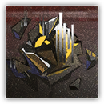
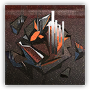

转译基底·α Translation Base α
不攻击；精英 构装
|
 |
来自内化宇宙的源石造物。在罗德岛Abyss区域中诞生的信息实体，未受到特定伤害的情况下不会展现出任何侵略行为。但它......好像在学习我们的行动模式？ |
转译基底 α丨Translation Base α
中型构装（源石造物），无阵营
| AC 17 | 先攻 +3（13） |
| HP 20（2d10） | |
| 速度 30 尺 | |
| 调整 | 豁免 | 调整 | 豁免 | 调整 | 豁免 | |||||||||
|---|---|---|---|---|---|---|---|---|---|---|---|---|---|---|
| 力量 | 10 | +0 | +2 | 敏捷 | 10 | +0 | +2 | 体质 | 10 | +0 | +2 | |||
| 智力 | 10 | +0 | +2 | 感知 | 10 | +0 | +2 | 魅力 | 10 | +0 | +2 |
| 抗性 力场 |
| 免疫 毒素；力竭，麻痹，石化，中毒 |
| 感官 真实视觉60尺，被动察觉10 |
| 语言 无 |
| CR 4（XP 1,100；PB+2） |
特质 Traits
魔法抗性 Magic Resistence。转译基底为抵抗法术和魔法效应而作的豁免具有优势。
信息本质 Informational Nature（仅未变形期间）。转译基底最多只能从一次伤害中受到10点伤害。
源石模拟 Originium Simulation（1/天）。转译基底在死亡时，变形为一种源石造物生物，且根据导致其死亡的伤害而呈现出不同的变化：
- 法术伤害。特战术师形态：生命值及生命上限提升至50。
- 非法术伤害。寻仇者形态：生命值及生命上限提升至70。
动作 Actions
多重攻击 Multiattack（仅限变形期间）。转译基底发动两次攻击。
燃血长刀 Bloody Longsword（仅寻仇者形态）。近战攻击检定：+5（若转译基底处于浴血则具有优势），触及5尺。命中：8（1d10+3）挥砍伤害。若转译基底处于浴血期间，则额外造成11（2d10）火焰伤害。
术法魔爆 Artcasting Burst（仅特战术师形态）。远程攻击检定：+7，射程120尺。命中：11（2d10）力场伤害。
转译基底·β Translation Base β
不攻击；精英 构装
|
 |
来自内化宇宙的源石造物。在罗德岛Abyss区域中诞生的信息实体，未受到特定伤害的情况下不会展现出任何侵略行为。但它......好像在化解我们的进攻？ |
转译基底 β丨Translation Base β
中型构装（源石造物），无阵营
| AC 19 | 先攻 +2（12） |
| HP 30（3d10） | |
| 速度 30 尺 | |
| 调整 | 豁免 | 调整 | 豁免 | 调整 | 豁免 | |||||||||
|---|---|---|---|---|---|---|---|---|---|---|---|---|---|---|
| 力量 | 10 | +0 | +3 | 敏捷 | 10 | +0 | +3 | 体质 | 10 | +0 | +3 | |||
| 智力 | 10 | +0 | +3 | 感知 | 10 | +0 | +3 | 魅力 | 10 | +0 | +3 |
| 抗性 力场 |
| 免疫 毒素；力竭，麻痹，石化，中毒 |
| 感官 真实视觉60尺，被动察觉10 |
| 语言 无 |
| CR 8（XP 3,900；PB+3） |
特质 Traits
魔法抗性 Magic Resistence。转译基底为抵抗法术和魔法效应而作的豁免具有优势。
信息本质 Informational Nature（仅未变形期间）。转译基底最多只能从一次伤害中受到10点伤害。
源石模拟 Originium Simulation（1/天）。转译基底在死亡时，变形为另一种源石造物生物，且根据导致其死亡的伤害而呈现出不同的变化：
- 法术伤害。特战术师组长形态：生命值及生命上限提升至70。
- 其他伤害。复仇者形态：生命值及生命上限提升至90。
动作 Actions
多重攻击 Multiattack（仅变形期间）。转译基底发动三次攻击。
燃血长刀 Bloody Longsword（仅复仇者形态）。近战攻击检定：+7（若转译基底处于浴血则具有优势），触及5尺。命中：8（1d10+3）挥砍伤害。若转译基底处于浴血期间，则额外造成11（2d10）火焰伤害。
术法魔爆 Artcasting Burst（仅特战术师组长形态）。远程攻击检定：+9，射程120尺。命中：11（2d10）力场伤害。